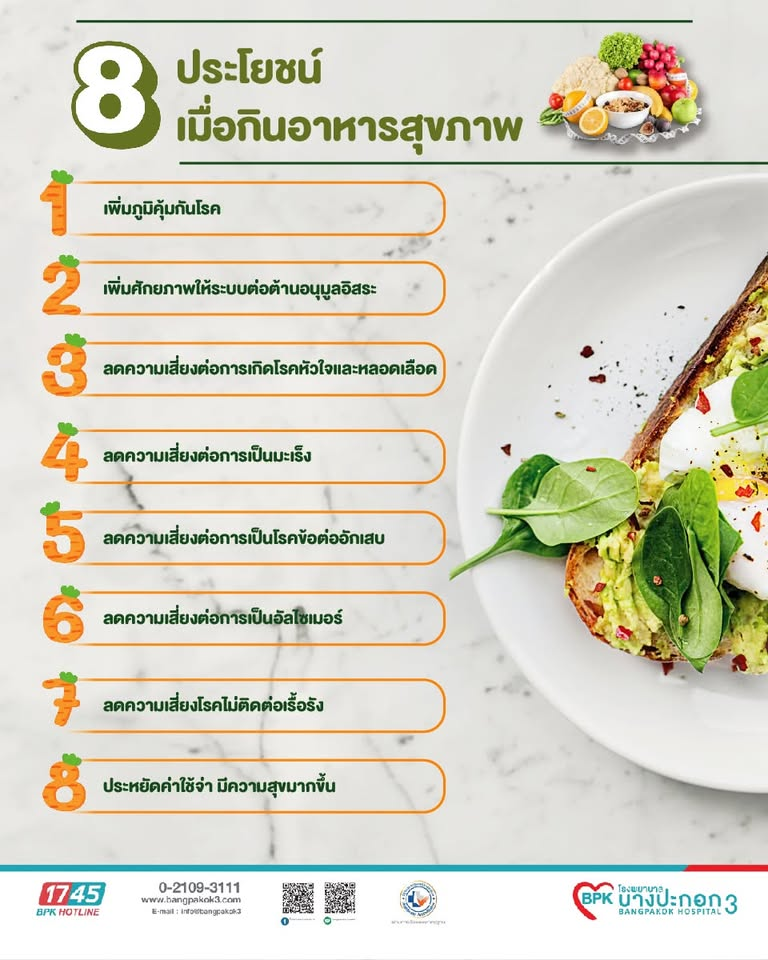

การรับประทานอาหารที่มีประโยชน์

การรับประทานอาหารที่มีประโยชน์เป็นพื้นฐานของการมีสุขภาพที่ดี วัยรุ่นควรรับประทานอาหารให้ครบ 5 หมู่ และรับประทานอาหารให้หลากหลาย เช่น ข้าวหรือแป้ง เนื้อสัตว์ ไข่ นม ผัก และผลไม้ ควรลดการรับประทานอาหารที่มีน้ำตาล ไขมัน และโซเดียมสูง รวมถึงหลีกเลี่ยงอาหารที่ไม่มีประโยชน์ เพราะอาจส่งผลต่อสุขภาพและทำให้เกิดโรคได้